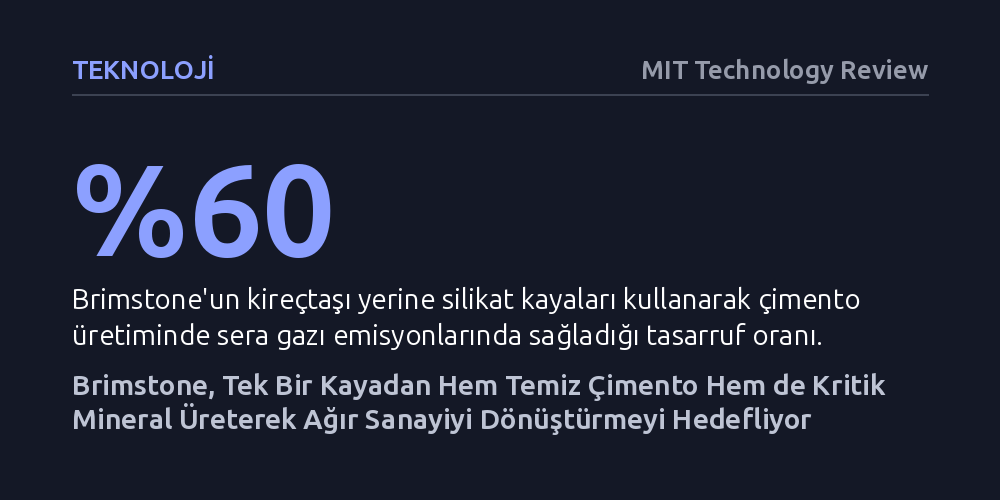

TEKNOLOJI · MIT Technology Review · 2026-10-07
Amerikan girişimi Brimstone, kireçtaşı yerine silikat kayası kullanarak çimento emisyonlarını yüzde 60 düşürürken aynı işlemle alüminyum ve çelik gibi kritik mineralleri ayrıştırıyor. Henüz ticari ölçeğe ulaşamasa da bu yöntem, ağır sanayide karbonsuzlaşma ile yerli mineral tedarikini tek çatı altında birleştiriyor.
Sanayi emisyonlarını düşürmeyi amaçlayan bir iklim teknolojisinin, ulusal güvenlik ve yerli madencilik gerekçeleriyle de destek bularak her siyasi iklimde hayatta kalabileceğini gösteriyor.

Küresel sanayi üretimi bugün iki devasa darboğazla karşı karşıya: Çimento sektörünün yarattığı devasa karbon ayak izi ve gelişmiş ülkelerin ihtiyaç duyduğu kritik minerallerin tedarikinde yaşanan dışa bağımlılık. Çimento ve beton üretimi, tek başına gezegendeki karbondioksit emisyonlarının yaklaşık yüzde 8'inden sorumlu tutuluyor. Öte yandan alüminyum, çelik, magnezyum ve titanyum gibi sanayi metallerinin üretimi de yoğun enerji tüketen, çevreye zarar veren ve büyük oranda belirli ülkelerin tekelinde olan karmaşık tedarik zincirlerine dayanıyor.
Kaliforniya merkezli bir iklim teknolojisi girişimi olan Brimstone, bu iki devasa endüstriyel meseleyi aynı potada eritmeyi teklif ediyor. Şirket, tek bir kaya türünü işleyerek hem geleneksel standartlara uygun temiz çimento üretmeyi hem de aynı tesiste batarya, havacılık ve inşaat sektörleri için hayati önem taşıyan kritik mineralleri ayrıştırmayı hedefleyen entegre bir rafineri modeli geliştiriyor.
Geleneksel çimento üretiminde temel ham madde olarak kireçtaşı kullanılıyor. Kireçtaşı fırınlarda yüksek sıcaklıklara kadar ısıtıldığında, kimyasal yapısındaki karbon doğaya karbondioksit gazı olarak salınıyor. Brimstone'un yaklaşımı ise bu döngüyü kökten değiştiriyor: Şirket kireçtaşı yerine yapısında karbon barındırmayan silikat kayalarını kullanıyor. Bu ham madde dönüşümü sayesinde çimento üretimindeki sera gazı salımları yaklaşık yüzde 60 oranında azaltılabiliyor. Üstelik şirket, 2023 yılında geliştirdiği bu yöntemin standart Portland çimentosu gereksinimlerini karşıladığını bağımsız sektör sertifikasıyla tescillemiş durumda.
Sürecin asıl ezber bozan yönü ise kayanın geri kalanından elde edilen çıktılarda yatıyor. Silikat kayalarının işlenmesi sırasında yalnızca çimentoyu güçlendiren yan ürünler değil, aynı zamanda alüminyum üretiminin ana ham maddesi olan metalurjik alümina da açığa çıkıyor. Şirket, aynı kayadan magnezyum, titanyum ve çelik gibi değerli metalleri de ayrıştırabileceğini öne sürüyor. Ayrıştırma adımlarının tek bir tesiste toplanması, her bir mineral için ayrı madencilik ve rafineri süreçleri kurmaya kıyasla hem enerji tüketimini hem de atık miktarını radikal biçimde düşürmeyi vaat ediyor.
Brimstone, Amerika Birleşik Devletleri'ndeki kutuplaşmış siyasi yapıda ayakta kalabilmek adına söylemini duruma göre ustalıkla dönüştüren bir iklim girişimi profili çiziyor. İklim krizine öncelik veren Biden yönetimi döneminde şirket, çimento üretiminde karbon salımını yüzde 60 azaltma vaadini öne çıkararak federal fonların ve teşviklerin dikkatini çekmişti.
Ancak korumacı ve iklim politikalarına mesafeli yaklaşan Trump yönetiminin iş başına gelmesiyle birlikte şirketin odağı değişti. Brimstone artık karbon ayak izinden ziyade, aynı kayadan elde edilen ve küresel pazar büyüklüğü 2,4 trilyon doları bulan kritik minerallerin yerli üretim potansiyelini vurguluyor. Küresel tedarik zincirinde ağırlıklı olarak Çin'in hâkimiyetinde olan bu stratejik girdilerin ABD topraklarında üretilebilmesi, şirketin ulusal güvenlik ve yerli sanayi kartını oynamasını sağlıyor. CEO Cody Finke, geliştirdikleri vizyonun büyüklüğünü "Sanayi devrimi yaratabilecek kuşaklar boyu sürecek şirketlerden birine sahibiz," sözleriyle özetliyor.
Tüm bu iddialı vaatlere rağmen Brimstone henüz ticari ölçekte üretime geçmiş değil ve önünde ciddi finansal ve teknik engeller bulunuyor. Sektör uzmanları, tek bir kaya türünden çok sayıda farklı metali ekonomik olarak anlamlı miktarlarda çıkarmanın ve ABD'deki yüksek işçilik maliyetleriyle rekabet etmenin son derece zorlu olacağına dikkat çekiyor. Nitekim Trump yönetimi, şirketin Nevada eyaletindeki Reno kentinde kurmayı planladığı gösterim tesisi için onaylanan 189 milyon dolarlık hibeyi geçen yıl iptal ederek projeye ciddi bir darbe vurdu.
Buna karşın şirket yönetimi, hibeler olmasa dahi projeyi hayata geçirebileceklerini ve yönetimle görüşmelerin olumlu sürdüğünü belirtiyor. Brimstone şimdiden perakende devi Amazon'a çimento, Century Aluminum şirketine ise alümina tedarik etmek üzere ön anlaşmalar imzalamış durumda. Ancak Reno'daki ilk tesisin 2028'den önce faaliyete geçmesi beklenmiyor ve bu tesis başlangıçta yalnızca çimento ve alümina üretecek. Çelik ve titanyum gibi diğer kritik minerallerin üretileceği tam ölçekli fabrikanın devreye girmesi ise önümüzdeki on yılı bulabilir.